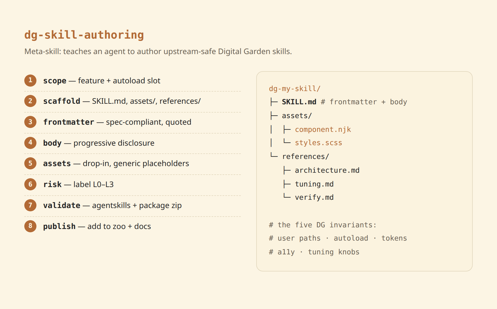

dg-skill-authoring
A meta-skill: how to build a new Digital Garden skill.


This one doesn't add a feature to your site — it teaches your agent how to author another skill that does. Hand it a Digital Garden customization (a component, widget, style, layout tweak) and it produces a spec-compliant, upstream-safe SKILL.md package that any other DG user's agent can install — following the exact pattern behind this zoo.
How to use it
Copy the skill folder into your agent's skills directory, then in your skills repo ask:
git clone https://github.com/palol/skills-zoo.git
cp -r skills-zoo/skills/dg-skill-authoring ~/.claude/skills/(or ~/.agents/skills/)
Use the dg-skill-authoring skill to turn this custom callout box into a reusable Digital Garden skill. Scope it, scaffold the folder, write spec-compliant frontmatter, and validate it.
It walks through scoping → scaffolding → frontmatter → body → assets/references → risk label → skills-ref validate → publishing to the zoo.
The five DG invariants
Every skill it produces must satisfy these — the real product of the meta-skill:
- User-owned paths only. Write into
components/user/common/<slot>/,styles/custom-style.scss,helpers/userUtils.js,notes/— never core layouts. Survives upstreamgit pull. - Autoload, don't wire. DG's
dynamics.jsglobs the slot folder and sorts alphabetically; a filename prefix (zzz-/aaa-) controls render order. No layout edit. - Theme via tokens. Style with DG variables (
--background-secondary,--text-accent, …) so light/dark work automatically. Colors are never a knob. - Accessibility is not optional. Real text in
aria-label, iconsaria-hidden, keyboard-operable controls, visible focus, reduced-motion respected. - Consolidate tunables. One
>>> TUNING KNOBS <<<:rootblock; derive everything from it.
If a feature can't respect invariants 1–2 (needs a core/layout edit), the skill scopes it down or stops — it won't ship something that breaks on update.
Spec correctness, baked in
It enforces the agentskills.io rules that informal examples get wrong:
- Only
name,description,license,compatibility,metadata,allowed-toolsvalidate at top level —version/author/risk-levelnest undermetadata:. descriptionwritten as a trigger condition (what it does + "Use when…" + literal trigger phrases) — it's the only field the agent reads to activate.- Progressive disclosure: lean
SKILL.mdbody, verbose detail inreferences/, drop-in files inassets/. - Validate with
npx skills-ref validate <dir>/; package bundled skills as a zip of the whole directory.
What's in the box
- SKILL.md — the meta-skill: invariants + 8-step authoring workflow
- assets/SKILL.template.md — starter frontmatter + body skeleton
- references/dg-mechanics.md — DG plugin internals + verified spec rules
- references/authoring-workflow.md — annotated walkthrough + ship-gate checklist
Prerequisites
- An agent that supports the Agent Skills format and can run
skills-ref validate. - A target Digital Garden repo (oleeskild plugin + Eleventy) the produced skill will apply to.
Scope is Digital Garden only — the invariants encode DG conventions (autoloader, theme tokens, user-owned paths), not Quartz/Astro/plain-Eleventy.